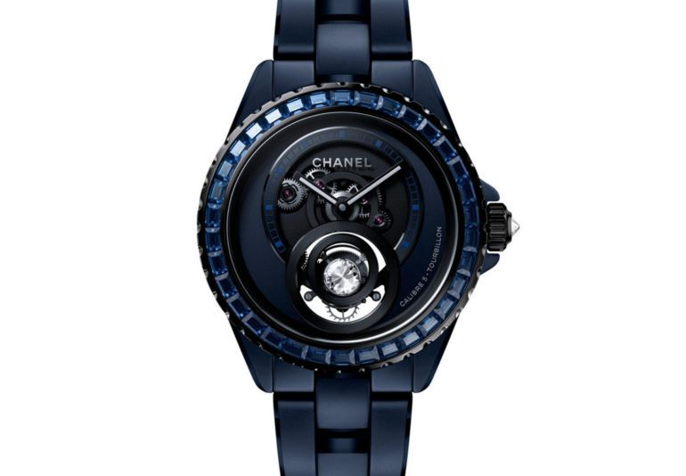

CHANEL берёт курс на Темзу
CHANEL становится титульным спонсором легендарной гребной гонки между Оксфордом и Кембриджем — в 2025 году она впервые пройдёт под новым именем CHANEL J12
CHANEL становится титульным спонсором легендарной гребной гонки между Оксфордом и Кембриджем — в 2025 году она впервые пройдёт под новым именем CHANEL J12. Дом моды также станет официальным хронометристом соревнования, впервые за почти двухвековую историю гонки.
Это партнёрство — не просто жест брендинга. Оно символизирует глубокое родство духа: коллективную энергию, стремление к совершенству, преданность традиции и бесстрашие перед переменами. Всё это объединяет CHANEL и одну из самых узнаваемых спортивных традиций Великобритании.
В истории Дома спорт всегда играл особую роль. Ещё в начале XX века Габриэль Шанель черпала вдохновение в мужской спортивной одежде, чтобы подарить женщинам свободу движений и свободу быть собой. Через десятилетия это стремление к свободе и мастерству воплотилось в часах J12 — модели, ставшей символом новой элегантности, где роскошь сочетается с технической точностью.

J12 названы в честь гоночных яхт класса J, участвовавших в Кубке Америки. Как и гребцы на старте, каждый элемент этих часов работает в идеальной синхронности — от керамического корпуса до автоматического механизма, разработанного совместно с швейцарской мануфактурой Kenissi.
Президент CHANEL Watches & Fine Jewellery Фредерик Гранжье подчеркивает: CHANEL разделяет ценности The Boat Race, где каждый участник — часть единого целого, а победа достигается через точность, баланс и идеальную координацию. Именно эти качества делают и высокое часовое искусство, и великое спортивное состязание подлинным культурным событием.
Фото: CHANEL